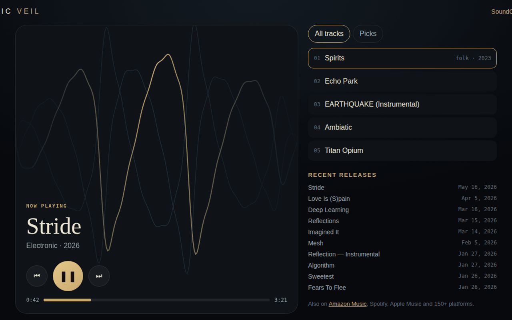

Strings
Featuring Austin Corbett, a close collaborator named on the profile. Out on Amazon Music, iTunes and the rest of the 150-platform spread.
Ambient, experimental and electronic soundscapes, ten years running and genre-bending on purpose. Folk one release, ambient electronic the next. Press play right here.
Streams from SoundCloud · the whole catalogue and the picks

“I'm Sonic Veil, a composer crafting ambient, experimental, and electronic soundscapes. Join me on an audio journey that spans my work from 2016 to today. Expect genre-bending explorations through captivating compositions.”
The catalogue backs it up: a feature collaboration, a solo instrumental and a lyric-forward folk song carry three different genre tags in three different modes. That spread is the evidence, not just the word in the bio.
Featuring Austin Corbett, a close collaborator named on the profile. Out on Amazon Music, iTunes and the rest of the 150-platform spread.
Released August 26, 2024. A solo instrumental single: no vocal, no feature, just the composition.
March 2023, tagged folk and singer-songwriter. The most lyrically direct thing in the catalogue.
Stride, Love Is (S)pain, Deep Learning, Reflections, Imagined It, Mesh, Algorithm and more, January to May 2026.
First work in 2016. 86 tracks. Around 1,200 followers. Releases land on SoundCloud first, then go out to Spotify, Apple Music, iHeartRadio and the rest.
keep scrolling · it opens right here